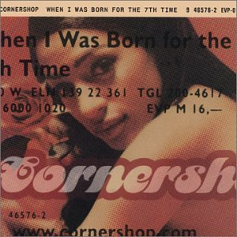
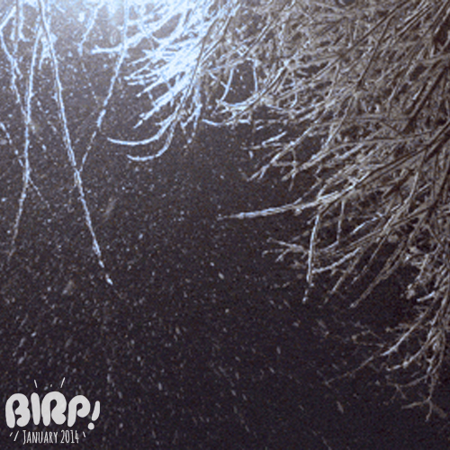
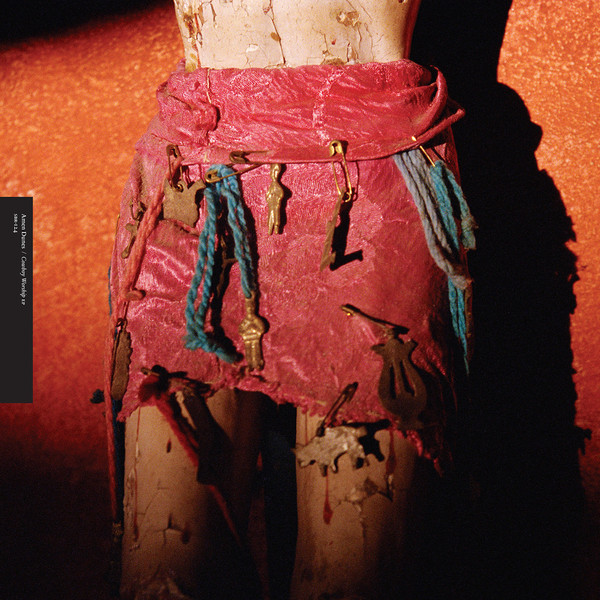
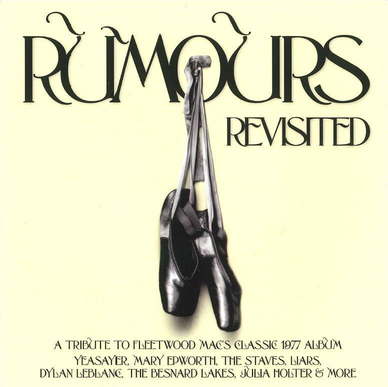
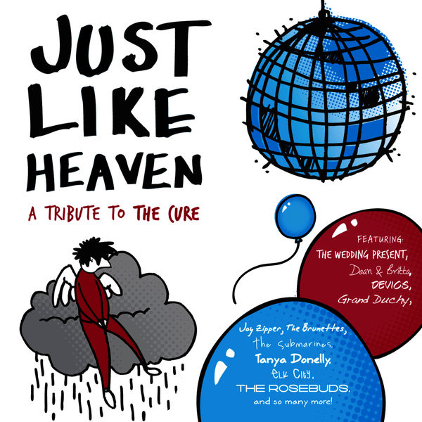
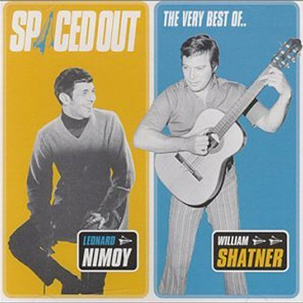
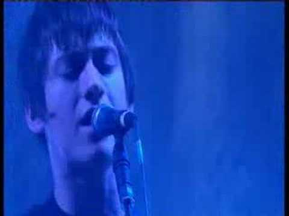
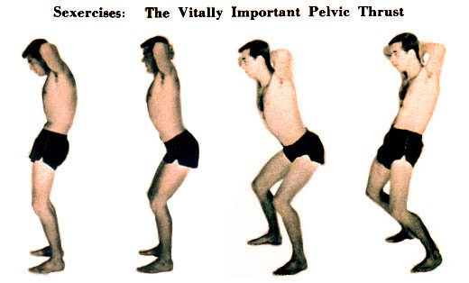
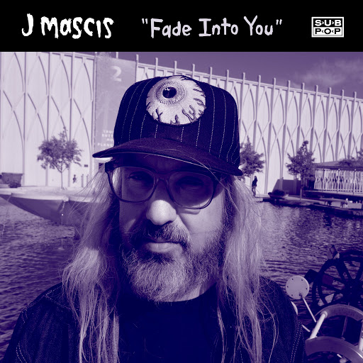

01
01
Golden Brown
Bedhead – Singles / EPs / B-Sides (2014)
orig. The Stranglers

02Norwegian Wood (This Bird Has Flown)
Cornershop – When I Was Born for the 7th Time (1997)
orig. The Beatles
 03
03
These Boots Are Made For Walkin'
Parquet Courts – Content Nausea (2015)
orig. Nancy Sinatra
 04
04
Let 'Em In
Billy Paul – Let 'Em In (2009)
orig. Paul McCartney
 05
05
Heart Of Gold
Bettye LaVette – Child Of The Seventies (2006)
orig. org. Neil Young

06When Will I Be Loved
Sun Airway – Soundcloud (2014)
orig. Everly Brothers

07Song to the Siren
Amen Dunes – Cowboy Worship (2015)
orig. Tim Buckley
 08
08
If You Could Read My Mind
Johnny Cash – American V: A Hundred Highways (2006)
orig. Gordon Lightfoot
 09
09
Jealous Guy
Donny Hathaway – Live (1972)
orig. John Lennon

10You Make Loving Fun
The Besnard Lakes – Rumours Revisited (2012)
orig. Fleetwood Mac

11Friday I'm in Love
Britta Phillips & Dean Wareham – Just Like Heaven: a tribute to The Cure (2009)
orig. The Cure
 12
12
Modern Girl
Camera Obscura – KCRW Morning Becomes Eclectic Session, July 19, 2006 (2006)
orig. Sheena Easton

13Ruby, Don't Take Your Love To Town
Leonard Nimoy – Spaced Out - The Best of Leonard Nimoy & William Shatner (1999)
orig. Waylon Jennings
 14
14
Heart of Glass
Lily Allen – Internet Single (2007)
orig. Blondie - Live at SXSW

15Diamonds Are Forever
Arctic Monkeys – Covers (2007)
orig. Shirley Bassy - live at Glastonbury

16Do You Think I'm Sexy
Mark Savage – MixTape Vol. 2 - Diamonds & Rust (1979)
orig. Rod Stewart - live
 17
17
There She Goes
The Crawdaddys – Be A Caveman, The Best Of Voxx Garage Revival (1992)
orig. The La's
 18
18
Without You
Th' Faith Healers – Peel Sessions (1994)
orig. Badfinger/Harry Nilsson

19Fade Into You
J Mascis – Fade Into You (2014)
orig. Mazzy Star
20
Changes
Lewis & Clarke – We Were So Turned On - A Tribute To David Bowie (2010)
orig. David Bowie
 21
21
Eight Miles High
Husker Du – Eight Miles High (1998)
orig. The Byrds
22
Suzanne
Françoise Hardy – Françoise Hardy (1968)
orig. Leonard Cohen
 23
23
Wichita Lineman
Tony Joe White – Swamp Fox: The Definitive Collection 1968-1973 (2015)
orig. Glen Campbell